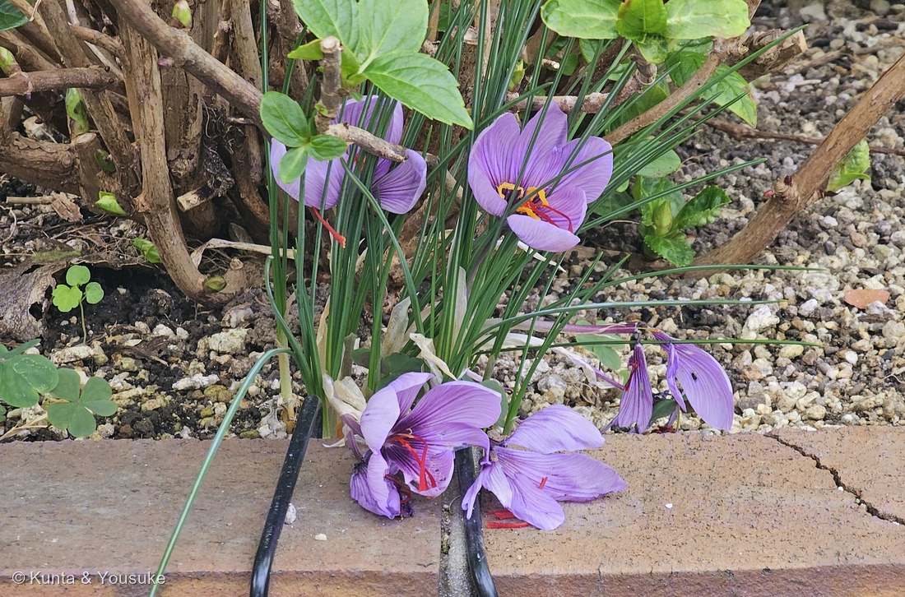

地図を読み込んでいるよ…
🔍 写真も地図も、押しているあいだ拡大して見られるよ（スマホは指を置いてすこし待ってね）。
🌍 の地図＝この子がもともと自生している場所を緑に。野生の株はなく、栽培の中で生まれた植物。いちばん近い先祖とされる野生種 Crocus cartwrightianus から、ギリシャ本土の南部で生まれたらしい。日本へは江戸時代に薬として伝わった。
⭐野生の株はない、栽培の中で生まれた子だよ＝3倍体で種ができず、球茎でふやされてきた（英語版Wikipedia）。⭐いちばん近い先祖とされる野生種 Crocus cartwrightianus から、ギリシャ本土の南部で生まれたらしい＝⭐だからギリシャだけを塗った。⚠いまはイラン・スペイン・インドなど世界の各地で育てられている。⭐日本へは江戸時代に薬として伝わり、いまは大分県竹田市が国内生産の約8割（Wikipedia「サフラン」）。⭐この植えこみの株は、だれかが育てているものだよ。
⚠ 地図は国（日本と中国だけ県・省）までしか塗れないから、ほんとうの分布より広く見えていることがあるよ。地図はだいたいの場所。正確なところは、上の文を見てね。
サフラン（番紅花）
Crocus sativus L.
別名 · 薬用サフラン／生薬名 番紅花（ばんこうか）／英名 saffron crocus・autumn crocus
アヤメ科 · Iridaceae（クロッカス属 Crocus · キジカクシ目 Asparagales）
燻太さんの言葉「真っ赤な3本の雌しべが目を引くね。サフランの香り、どんなだったかな。」── ⭐スパイスになるのは、この赤い柱頭だけ。雄しべは使わない
⭐⭐⭐ 名前と学名の由来 ── 「糸」と「栽培された」
- ⭐⭐ 属名 Crocus（クロクス）は、ラテン語の crocus をへて、ギリシャ語の κρόκος（krokos）から（英語版Wikipedia「Crocus」）。⭐もとはサフランそのものを指す言葉だったんだ。
- ⭐⭐ 種小名 sativus は、ラテン語で「栽培された」（⚠ラテン語の意味からのぼくの読み）。⭐この子には野生の株がないから、名前がそのまま正体を言っているね（下の「この植物のこと」）。
- ⭐ 「サフラン」という言葉は、古フランス語の safran、中世ラテン語の safranum から来た（英語版Wikipedia「Saffron」）。⭐日本語版Wikipediaは、さかのぼるとペルシャ語にたどり着く、と書いている。
- ⭐ 日本では「咱夫藍」の字が当てられ、「洎夫藍」「洎夫蘭」とも書いた。よく見る「泊夫藍」は「洎」をまちがえたもの（Wikipedia「サフラン」）。⭐生薬の名前は「番紅花」（同）。
⭐⭐⭐ この植物のこと ── 赤い3本の糸を、人が育ててきた花
- ⭐⭐⭐ アヤメ科クロッカス属の球根（球茎）植物で、秋に淡い紫の花を咲かせる。⭐花の中から、長さ25〜30mmの花柱が出て、先が3つに分かれ、それぞれ深紅の柱頭になる（英語版Wikipedia「Saffron」）。⭐燻太さんの「真っ赤な3本の雌しべ」が、まさにそれ。
- ⭐⭐⭐ スパイスのサフランは、この深紅の柱頭（と花柱）を摘んで乾かしたもの（英語版Wikipedia・Wikipedia「サフラン」）。⭐1kgのサフランに、約15万個の花が要る（英語版Wikipedia）。⭐1つの花から3本しかとれないから、とても高いんだね。
- ⭐⭐⭐ 野生の株はなく、3倍体で種ができない＝染色体の組がうまく対にならず、実ができない。だから球茎を分けて、人の手でふやすしかない（英語版Wikipedia「Crocus sativus」）。⭐いちばん近い先祖は野生種 Crocus cartwrightianus で、ギリシャ本土の南部で、選んで育てるうちに生まれたらしい（同）。
- ⭐⭐ 日本へは江戸時代に薬として伝わった。⭐1886年（明治19年）、神奈川県大磯町の添田辰五郎さんが、病気の母親のために球根を輸入して育てたのが、国内の栽培の始まり（Wikipedia「サフラン」）。⭐1903年に大分県竹田市へ伝わり、いまも国内生産の約8割が竹田市（同）。
- ⭐⭐ 竹田市には、土も水も使わずに室内で花を咲かせる「竹田式栽培法」がある（1910年ごろに考えられた・薬史学雑誌 2019）。⭐球茎の中に、花を咲かせる力がもうしまってあるんだ。
- ⭐ 写真①の手前のレンガの上には、倒れた花と、ちぎれた赤い糸のような柱頭が落ちている。⚠なぜ倒れたのか（雨や風か、だれかが摘んだあとか）は、写真からは分からないよ。
⚠ 同定について ── 雄しべ3本で、毒のあるイヌサフランとは分かれる
- ⭐⭐⭐ まずクロッカス属で決まり＝クロッカス属は雄しべ3本・花柱1本で、先が3つの長い柱頭になる（英語版Wikipedia「Crocus sativus」「Crocus」）。⭐写真①の右上の花には、黄色い葯が3つ見える。
- ⭐⭐⭐ イヌサフラン（Colchicum autumnale）ではない＝イヌサフラン属は雄しべ6本・花柱3本（英語版Wikipedia「Crocus」）。⚠⚠イヌサフランは英語で meadow saffron と呼ばれることもあり、毒があるので、サフランとの見分けがとても大事（英語版Wikipedia「Crocus sativus」）。⭐それがおまけだよ。
- ⭐⭐ 秋に咲くクロッカスはほかにもあるけれど、サフランは「深紅の長い柱頭が、花の外へ垂れ出る」のが目じるし（花柱25〜30mm・英語版Wikipedia「Saffron」）。⭐写真①でも、赤い柱頭が花びらのふちから外へ垂れているよ。
- ⭐ 春に咲く園芸のクロッカス（132 スノードロップのおまけ）とは、咲く季節と、この赤い長い柱頭で分かれる。
⭐⭐⭐⭐ 燻太さんの3つの「気になる」── 葉の白いすじ・雄しべ・育てやすさ
- ⭐⭐⭐ 葉のまんなかの白いすじは、サフランだけでなく、クロッカス属みんなの特徴＝葉の表は平らかみぞになっていて、白っぽいすじがある。そのすじは、葉緑体を持たない細胞（柔組織）でできている（英語版Wikipedia「Crocus」）。⭐だから白く見えるんだね。
- ⭐⭐⭐ 雄しべは、スパイスには使わない＝⭐黄色い雄しべは味も香りもなく、むしろサフランに混ぜて量をごまかす「にせもの」の材料として名前が出てくる（英語版Wikipedia「Saffron」）。⭐花柱も、黄色い部分が多いほど色と香りが薄くなり、等級が下がる（Wikipedia「サフラン」）。⭐大事なのは、赤い柱頭だけなんだ。
- ⭐⭐⭐ 育てるのは、むずかしくない＝⭐初心者でも育てやすいとされ、気をつけるのは夏の高温多湿と水のやりすぎ（YOKKA）。⭐日当たりのよい場所に、球根を10cmくらいの深さに植える。夏は掘り上げて涼しく暗い場所に置くか、雨の当たらない風通しのよい場所で（同）。⭐−10℃くらいの霜にも耐え、水はけのよい土を好む（英語版Wikipedia「Saffron」）。
- ⭐⭐ 竹田式のように、土に植えなくても球根だけで花が咲く（薬史学雑誌 2019）。⭐だから、まずは秋に球根を窓辺に置いて咲かせてみる、という楽しみかたもできるよ。
- ⚠ かかりやすい病気は軟腐病（YOKKA）。⚠それから、生薬としてのサフランは子宮を収縮させる作用があり、妊婦には禁忌とされている（Wikipedia「サフラン」）＝⭐料理に少し使うのとは別の話だけれど、知っておくといいね。
⭐⭐⭐ 燻太さんの「サフランの香り、どんなだったかな」
- ⭐⭐ スパイスの香りは「干し草のような」と言われ、そのもとはサフラナールという成分。苦みと香りは、ピクロクロシンとサフラナールから（英語版Wikipedia「Saffron」）。⭐あの黄色い色は、クロシンという色素（同）。
- ⭐⭐ いっぽう、生きた花の香りは「甘く、蜂蜜に似ている」とされる（Wikipedia「サフラン」）。⭐乾かしたスパイスの香りと、咲いている花の香りは、ちがうものなんだね。
- ⏳ こんど通るとき、そっと顔を近づけてかいでみてね（宿題①）。⚠だれかが育てている花だから、摘まずに、香りだけ。
⏳ 宿題 ── 3つ
- ⏳⭐⭐ ①花の香りをかいでみる＝甘く蜂蜜に似るとされる（Wikipedia「サフラン」）。⚠摘まずに、顔を近づけるだけで。
- ⏳⭐ ②冬から春に、細い葉がどこまで伸びるか見る＝春に約30cmまで伸びる（botanic.jp「サフラン」）。⭐花のあとも、葉が球茎を太らせているよ。
- ⏳⭐ ③おまけのイヌサフラン＝雄しべ6本・花柱3本・葉は春に出る。
参考：英語版Wikipedia「Saffron」（iodoformic or hay-like fragrance result from the phytochemicals picrocrocin and safranal・crocin・A three-pronged style 25–30 mm in length・Each prong terminates with a vivid crimson stigma・sterile triploid form・150,000 crocus flowers per kilogram・the saffron crocus's tasteless and odourless yellow stamens（混ぜものとして）・tolerating frosts as low as −10 °C・well-drained clay-calcareous soils・full sunlight・Old French safran, Medieval Latin safranum）／英語版Wikipedia「Crocus sativus」（triploid with 24 chromosomes・sexually sterile・vegetative multiplication・most probable ancestor is the wild species Crocus cartwrightianus・southern portion of mainland Greece・the true crocuses have three stamens and one style supporting three long stigmas・Colchicum autumnale is sometimes even referred to as meadow saffron・Colchicums are also toxic）／英語版Wikipedia「Crocus」（flat or channelled with pale median stripes・caused by parenchymatous cells which lack chloroplasts・Greek κρόκος・Crocus species have three stamens while Colchicum species have six）／Wikipedia「サフラン」（咱夫藍・洎夫藍・泊夫藍は洎の誤り・江戸時代に薬として伝わる・1886年 添田辰五郎・1903年 竹田市へ・国内生産の約8割・花の香りは甘く蜂蜜に似る・番紅花・花柱の割合が多いほど等級が下がる・妊婦には禁忌）／髙浦（島田）佳代子・髙橋京子・渡部親雄「文献資料と現地調査によるサフラン栽培法の変遷検証：竹田式栽培法の特質」薬史学雑誌 54(1) 2019（blooming saffron indoors without soil and water・invented around 1910 in Taketa・Approximately 80% of domestic saffron is produced in Taketa）／botanic.jp「サフラン」（江戸時代後半に渡来・11月ごろ開花・針状の根生葉が春に約30cm）／YOKKA「植えっぱなしでも育てられるサフラン」（初心者でも育てやすい・夏の高温多湿と水やりに注意・10cmぐらい深めに植える・日当たり・軟腐病）